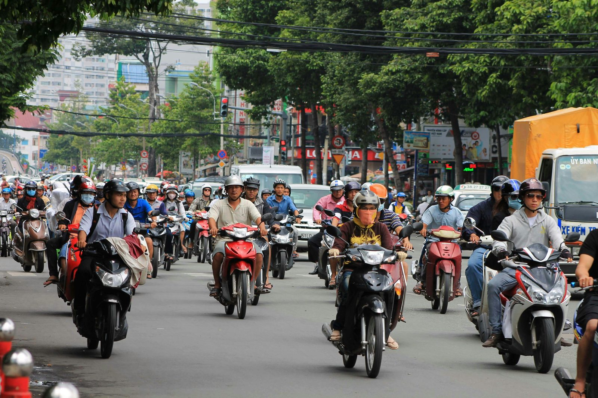

ベトナムの株式市場が、静かに大きな転換点を迎えようとしています。2026年9月21日、ベトナム株はFTSE Russellの新興国（セカンダリー・エマージング）指数へ正式に組み入れられます。フロンティア市場から一段上のステージへ──世界の機関投資家の「投資対象」に正式に加わる歴史的なイベントです。
それにもかかわらず、足元のVN-Indexは約1,850ポイント（7月9日時点）と、決して割高な水準にはありません。予想PER（株価収益率）は12.7倍と、新興国のなかでも割安に放置されています。この「昇格前夜の割安」をどう見るべきか。CQC投資調査部は、ベトナム経済の構造変化を背景に上昇トレンドが長期的に続き、2045年にはVN-Indexが20,000ポイントに到達する可能性があると予想しています。現在の約10.8倍です。その根拠を、一問一答の形で整理しました。
ベトナム株に割高感はあるのか
「新興国の株だから」という理由だけで、割高・割安を語ることはできません。大切なのは、株価が企業の「利益」に対して高いのか安いのか、という一点です。
この観点で見ると、ベトナム株はむしろ割安に放置されています。VN-Indexの予想PERは12.7倍。実績ベースでも15.3倍で、これは過去10年の平均と同じ水準です。つまり、指数の数字（ポイント）は切り上がっていても、それは企業の利益がそれ以上に伸びてきた結果であり、「株価だけが先走っている」状態ではないのです。
むしろ注目すべきは、成長率との対比です。ベトナムの上場企業の1株当たり利益（EPS）は、2026年に約20%の増益が見込まれています。年率20%で利益が伸びる市場が、PER12〜13倍で買える──これは他の新興国と比べても際立って割安です。利益成長のスピードに対して株価が追いついていない、というのが実態に近いと考えます。
かつて日本でも、日経平均が長くデフレの重石を背負い、「上がってもどうせ続かない」という逆張り的な発想が根付いていました。ベトナム株にも似た空気があります。しかし、後述するように、ベトナム経済の「地力」はこの20年で大きく変わりました。株価水準の高低ではなく、その裏にある利益成長を見れば、評価はまったく変わってきます。
上昇トレンドはいつまで続くのか
私たちは、ベトナムを「20年単位」で捉えるべき国だと考えています。1986年に市場経済への転換（ドイモイ＝刷新）を始めてから約40年。市場経済化の20年、産業高度化の20年を経て、いま3つ目の「高所得国化の20年」の入口に立っています。
象徴的なのが、一人当たりGDPの水準です。ベトナムは2025年に約5,026ドルに達しました。これは、日本が1975年に記録した4,776ドルとほぼ同じ「5,000ドルの通過点」です。約50年の時差はありますが、両国は同じ転換点に立っている、という捉え方ができます。
この節目を過ぎると、経済の主役が「外資の製造業」から「国内の消費・金融・不動産」へと移っていきます。日本も韓国も台湾も中国も、程度の差こそあれ、この「製造業主導から内需主導へ」の転換を経て株式市場が大きく拡大しました。ベトナムはいま、まさにその入口にあります。インフレを伴いながら経済規模が拡大する局面では、企業は価格転嫁で利益を確保しやすくなり、その利益が株価を押し上げます。この構造が続く限り、上昇トレンドは長期的なスパンで想定しておいたほうがよい、と考えています。

「20,000ポイント」の根拠
結論から言えば、20,000ポイントは「利益成長」と「評価の見直し（リレーティング）」という2つの掛け算で導かれます。突拍子もない数字に聞こえるかもしれませんが、分解すると、いずれもごく常識的な前提の積み重ねです。
株価は、長期的には企業の利益（EPS）に沿って動きます。そして企業の利益は、名目GDP（物価上昇を含んだ経済規模）とともに拡大します。ベトナムの名目GDP成長率は、実質成長率7%程度にインフレ率3%程度を加えて、年率10%前後で推移すると想定します。年率10%が20年続けば、経済規模は約6.7倍になります。利益もこれに沿って伸びるとすれば、株価も約6.7倍。この時点でVN-Indexは約12,400ポイントです。
もう一段の押し上げ要因が、市場の「格上げ」です。現在のベトナム株は、フロンティア市場という「未整備な市場」ゆえに、実力より割り引かれて評価されています。予想PER12.7倍という割安さは、その現れです。2026年9月のFTSE新興国入り、そしてその先に控えるMSCI新興国入りが実現すれば、この割引が解消に向かいます。世界の巨額なパッシブ資金（指数連動の運用資金）が流入し、PERは新興国の標準的な15〜16倍へ、株式時価総額のGDP比も先進国の手前まで高まっていきます。この評価の見直しで、株価はさらに約1.6倍になると見込みます。
現在のVN-Index 約1,850ポイント × 10.8倍 ＝ 約20,000ポイント（2045年）。年率にすると約12.6%、配当込みなら約15%の複利成長です。
予想PER 12.7倍
（実質7%＋物価3%）
（PER 12.7→約16倍を含む）
現在の約10.8倍
| 2045年時点の前提 | 弱気 | 基本 | 強気（本コラムの主役） |
|---|---|---|---|
| 名目GDP成長（年率） | 約7% | 約8〜9% | 約10% |
| 市場の格上げ | FTSEにとどまる | FTSE＋MSCI一部 | FTSE＋MSCI完了 |
| 想定PER | 約13倍 | 約14〜15倍 | 約16倍 |
| VN-Index（2045年） | 約12,000 | 約16,000 | 約20,000 |
その感覚はよく分かります。ですが、「過去の実績」と比べると、むしろ保守的とも言えるのです。ベトナムの一人当たりGDPは、20年前（2005年）の約700ドルから、現在の約5,026ドルへと、すでに約7.2倍に拡大しています。名目GDPで7倍を実績として達成してきた国が、次の20年で経済規模6.7倍・株価10.8倍を目指す──決して非現実的な目標ではありません。しかも過去20年は市場が「未整備」なままでしたが、次の20年は「昇格」というリレーティングの追い風が加わります。
上昇のけん引役はどの業種か
ここは、少し注意が必要な論点です。ベトナム経済の成長エンジンは、SamsungをはじめとするFDI（外国直接投資）の製造業です。ただ、外資工場が稼いだ利益の多くは本国へ還流するため、その果実を「ベトナム株」で直接つかむことはできません。
では何をつかむのか。外資が生み出す「雇用・賃金・現地調達」が国内に落とすお金です。工場で働く人が給料を受け取り、家を買い、ローンを組み、消費する。この流れの受け皿になるのが、銀行・不動産・消費といった内需セクターです。ベトナム株の上場市場は、この内需セクターに偏っています。「外資が稼ぎ、内需が上場市場で利益に変える」──この波及の経路こそが、ベトナム株で捕捉できるリターンの源泉です。
とりわけ銀行セクターは、金融深化（預金中心から与信・投資への広がり）の初期段階にあります。与信残高はすでに2025年に前年比約18%伸びており、経済成長を「増幅」して利益に変える立場にあります。内需の拡大が続く限り、当面はこのセクターが指数のけん引役になると見ています。
では、どう銘柄を選べばよいか
「指数が10倍になるなら、何を買っても上がる」とは考えないほうがよい、というのが率直なところです。ベトナム株の最大の弱点は、銀行・不動産の2セクターで時価総額の約65%を占めるという「偏り」にあります。2022〜2023年には不動産関連の社債問題からVN-Indexが高値から約35%下落した局面もありました。指数全体が長期上昇する過程でも、この偏りが増幅する調整は繰り返し起こり得ます。
だからこそ、選別が要ります。銀行なら不良債権の実態と資本の厚み、不動産なら手がける物件の質（住宅・工業団地か、投機的な案件か）を見極める。加えて、外国人保有枠（FOL）や国有企業（SOE）の株式売却といった「制度の動き」で、買える銘柄・伸びる銘柄は変わってきます。個別の見極めが難しい場合は、指数連動のファンドや、選別力に定評のあるアクティブファンドを通じて、セクターを分散して持つことが現実的な選択肢になります。
金利や与信サイクルは重荷にならないか
デフレの時代であれば、金利上昇は企業の利益を圧迫し、株価の重荷になります。しかし、インフレを伴って経済が拡大する局面では、話が変わります。企業は金利を含めたコスト増を価格に転嫁でき、賃上げで所得が増えた消費者もそれを受け入れやすくなる。結果として企業業績は拡大を続け、金利上昇は「経済が力強い証」として消化されやすくなります。
与信サイクルについても、現在地は悪くありません。2022〜2023年の不動産調整を経て、与信の伸びは2025年に約18%まで回復しました。銀行のPBR（株価純資産倍率）は1倍台前半と依然として控えめで、サイクルはむしろ「底を打って中盤に入りつつある」局面と捉えています。もちろん、極端な金利上昇や与信の急反転はリスクですが、インフレが業績拡大を後押ししている現状を踏まえると、それが長期の上昇トレンドそのものを崩す展開は、想定しにくいと考えています。
シナリオが崩れるとすれば、何が要因か
正直に、崩れ得る要因を3つ挙げます。
ドン安が進めば、ドル建てで見たリターンは目減りします。ただ過去10年のドンの対ドル減価は年平均1.5〜2.0%程度と緩やかで、外貨準備や経常収支がこれを支えています。年3%のドン安ストレス下でも、利益が年17%成長すればドル建てでもプラスを確保できる計算です。
対米輸出への依存が約29%あり、米国が「中国からの迂回輸出」を問題視して原産地規制を強めれば、輸出とFDIに影響します。もっとも、ベトナムは主要国すべてと最高位の外交関係を結ぶ「全方位外交」で、特定国依存のリスクを構造的に下げています。
前述の2022〜2023年型の調整は、いつでも起こり得ます。銀行・不動産偏重の市場である以上、ここが最大の内部リスクです。
いずれも「トレンドを一時的に揺らす」要因ではありますが、「20年の構造成長そのものを否定する」ものではない、というのが私たちの見立てです。とはいえ、これらのリスクは常に意識しておく必要があります。
リスクを抑えるには
2つ、お伝えしたいことがあります。1つは、一括ではなく、段階的に配分すること。昇格に伴うパッシブ資金は、実際に投資できる銘柄が限られるなかで集中しやすく、短期的には需給が主導する行き過ぎ（オーバーシュート）も起こり得ます。時間を分けて入ることで、こうした振れをならすことができます。
もう1つは、ベトナム株に集中せず、資産の一部を米ドルなど他の通貨・資産に分散して持つこと。強気シナリオを描きつつも、為替や地政学で想定が外れたときに、資産全体の目減りを和らげることができます。
ベトナムは、20年単位で捉えるべき国です。ドイモイから40年、市場経済化と産業高度化を着実に進め、いま「仕上げの20年」の入口に立っています。そして2026年9月の新興国入りという、20年に一度のカタリストが、まさに目前に迫っています。20,000ポイントという数字は、その長い道のりの「到達点のイメージ」です。大切なのは、目先の水準ではなく、この構造変化の初動に、無理のない形で参加することだと考えています。
CQC（Capital Quest Corporation）について
CQCは、ベトナムを中心とした東南アジアのマクロ・株式市場・セクター動向リサーチ（Asian Markets Intelligence）を、機関投資家・国内事業会社向けに提供しています。CFHベトナム現地法人と連携し、以下を手がけています。
- ベトナム経済・株式市場リサーチ
- 東南アジアマクロ・セクター調査
- クロスボーダーM&A候補先スクリーニング
- 機関投資家・事業会社向け定期レポート
本コラムは、当社投資調査部が公開情報および自社分析に基づき作成した情報提供資料であり、特定の金融商品の勧誘・投資助言を目的とするものではありません。